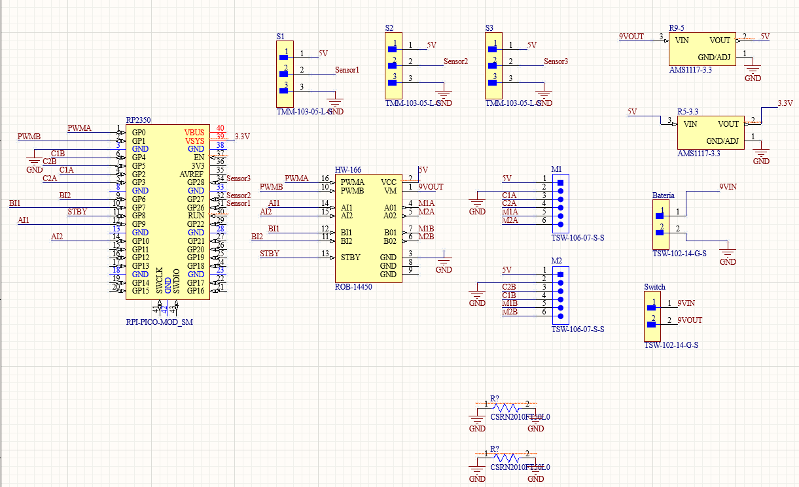
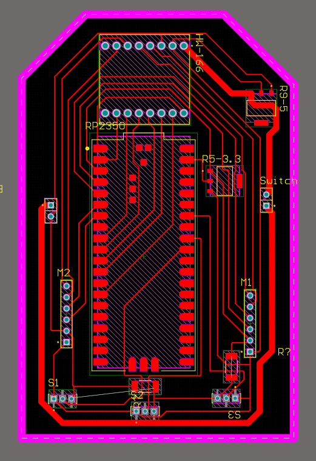
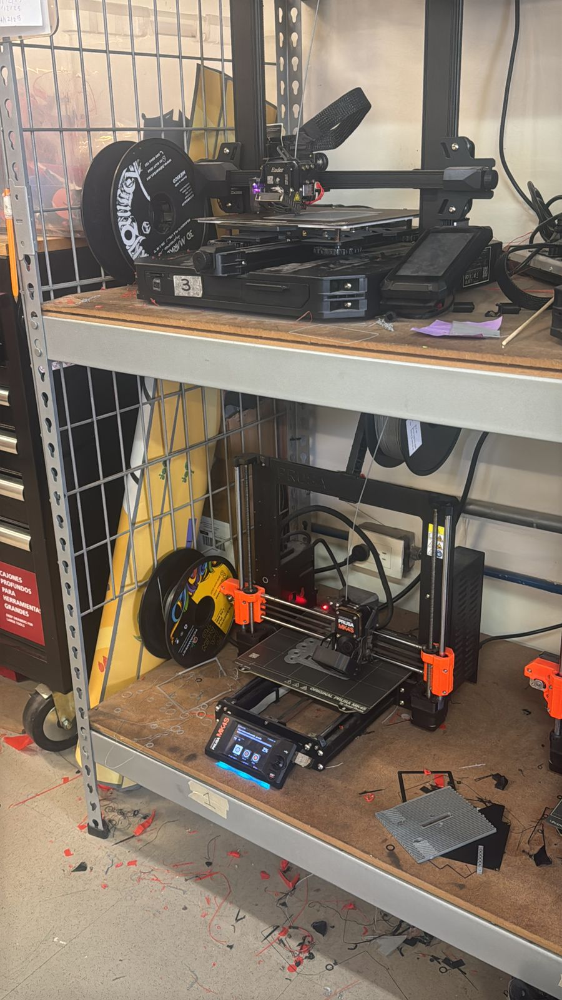
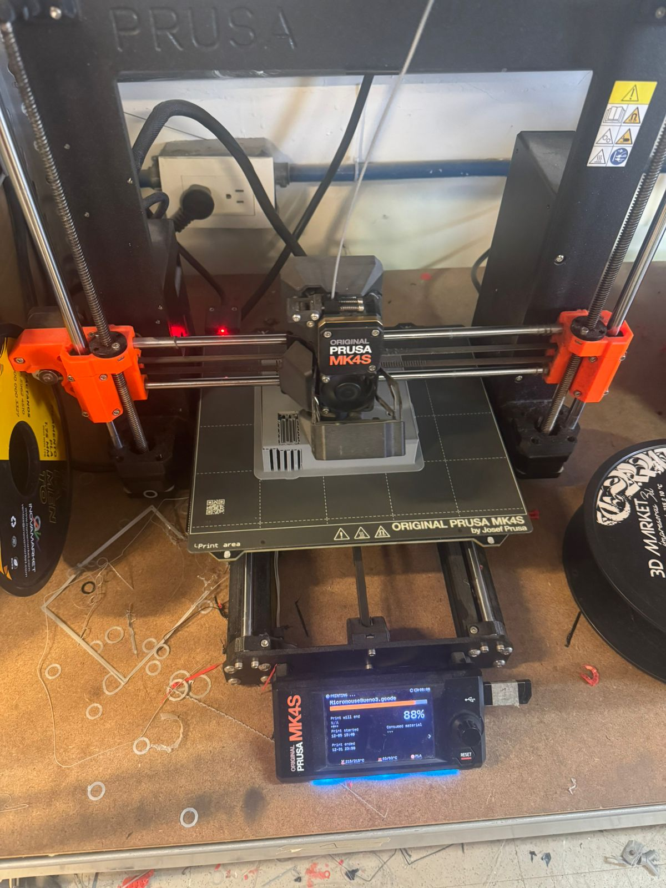
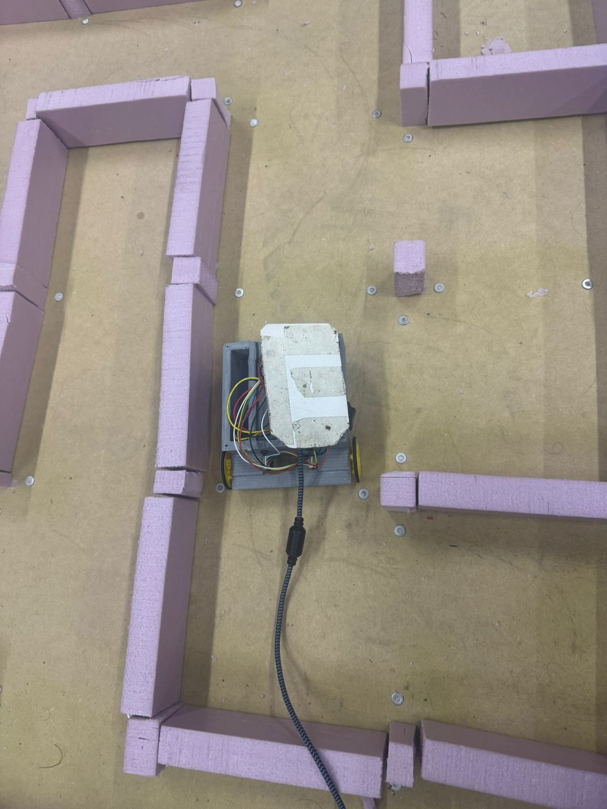

🐭 Proyecto — Micromouse (Apstone)
Robot móvil autónomo que explora un laberinto, construye un mapa y ejecuta una fast run óptima hacia el centro.
1) Resumen
- Nombre del proyecto: Micromouse
- Autor(es): [Equipo Micromouse]
- Curso / Asignatura: Apstone / Proyecto de Ingeniería
- Modo de operación:
MODO_ARENA(binario final para competencia) - Descripción breve:
Desarrollo de un robot autónomo capaz de explorar un laberinto 16×16, construir su mapa, encontrar una ruta óptima y ejecutar una carrera rápida minimizando el tiempo total.
Idea clave
El objetivo no es solo que el robot llegue a la meta, sino que lo haga rápido, robusto y de forma repetible, con buena ingeniería detrás.
2) Alcance y entregables obligatorios
2.1 Alcance
El proyecto incluye:
- Diseño mecánico, electrónico y de control del Micromouse.
- Algoritmos de:
- Exploración del laberinto.
- Construcción de mapa (memoria / estructuras de datos).
- Búsqueda de ruta y fast run.
- Implementación de:
MODO_ARENApara competencia.- Mecanismos de seguridad (kill switch, batería protegida, etc.).
No incluye (opcional / extra):
- Comunicación inalámbrica durante la carrera.
- Interfaces gráficas avanzadas.
- Telemetría compleja en tiempo real durante el evento (solo setup).
2.2 Entregables obligatorios
- ✅ Robot funcional con binario
MODO_ARENA. - ✅ Bitácora técnica final (1 página) con:
- Arquitectura y diagrama (pinout y clocks).
- Pruebas clave y resultados.
- Métricas y decisiones de diseño.
- Lecciones aprendidas.
- ✅ Código fuente:
- Repositorio con rama estable.
- Tag de release del binario usado en la competencia.
- Mapa de pines y configuración de relojes (clocks).
- ✅ Acta de resultados del evento firmada por jueces.
3) Especificaciones del laberinto 🧱
- Tamaño total: 16×16 celdas.
- Zona objetivo: área 2×2 en el centro del laberinto.
- Celdas: ≈ 15×15 cm.
- Paredes: ≈ 5 cm de alto (puede variar).
- Superficie: nivelada, con fricción suficiente para tracción.
- Condición de meta:
La meta se considera alcanzada cuando el centro geométrico del robot entra en la zona objetivo.
Implicación de diseño
Tus algoritmos de posición/odometría deben ser lo bastante buenos para saber cuándo el centro del robot está dentro de la celda objetivo, no solo cuando la punta “parece” llegar.
4) Reglas del robot 🤖
- Autonomía total:
No se permite ningún control humano durante el intento. - Dimensiones máximas:
≤ 12×12×12 cm. El peso es libre. - Seguridad:
- Sin elementos punzantes ni cortantes.
- Sin líquidos, humo ni materiales inflamables.
- Sin piezas sueltas.
- Kill switch:
- Obligatorio.
- Accesible sin levantar el robot.
- Integridad del hardware:
- Cableado firme.
- Batería protegida mecánica y eléctricamente.
Seguridad primero
Un robot que no pasa inspección de seguridad no participa, aunque funcione perfecto a nivel de control.
5) Formato de competencia 🏁
- Cada equipo dispone de hasta 3 intentos cronometrados.
- Cada intento incluye dos fases:
- Exploración (map building).
- Fast run (carrera óptima con el mapa ya construido).
- Acciones inválidas (anulan el intento):
- Asistencia manual al robot.
- Levantar el robot del laberinto.
- Salida deliberada de pista.
- Daño al laberinto o a otros robots.
6) Cronograma del evento (min) ⏱️
| Tiempo | Actividad |
|---|---|
| 00:00–00:10 | Registro e inspección de seguridad |
| 00:10–00:15 | Briefing (reglas y orden) |
| 00:15–01:30 | Clasificatorios |
| 01:30–01:50 | Final |
| 01:50–02:00 | Premiación y firma de actas |
7) Inspección técnica (checklist) ✅
Checklist previo a la competencia:
- [ ] Dimensiones ≤ 12×12×12 cm.
- [ ] Kill switch accesible y probado.
- [ ] Batería y cableado asegurados; sin bordes peligrosos.
- [ ]
MODO_ARENAcargado (sin logs verbosos ni debug excesivo). - [ ] CLI / telemetría usados solo en setup (no en carrera).
- [ ] Sin control remoto durante la carrera.
Buen hábito
Haz esta checklist antes de ir al evento para evitar sorpresas en la mesa de inspección.
8) Puntuación, bonos y penalizaciones 🧮
- Tiempo base (Tc):
Mejor fast run del equipo en segundos.
8.1 Bonos (restan tiempo)
- Exploración única (sin reset entre explorar y fast run): −5 s.
- Cero colisiones (validado por jueces): −3 s.
8.2 Penalizaciones (suman tiempo)
- Colisión clara: +2 s por colisión (máx. +10 s).
- Reinicio manual durante fast run: +5 s.
- Levantar el robot / salida de pista: intento inválido.
8.3 Fórmula final
[ P = T_c + \text{Bonos} - \text{Penalizaciones} ]
Nota: usa signos coherentes (bonos negativos, penalizaciones positivas) al calcular.
9) Criterios de desempate
- Menor fast run (solo Tc, sin bonos/penalizaciones).
- Menor tiempo de exploración.
- Si persiste el empate: sorteo supervisado (coin toss).
10) Documentación y entregas técnicas 📄
Bitácora técnica final (1 página)
Debe incluir:
- Arquitectura y diagrama
- Esquema general del sistema.
- Pinout y configuración de clocks.
- Pruebas clave:
- PIO
- DMA
- UART
- WDT (watchdog)
- Energía (reguladores, batería)
- EMC / ruido
- Uso multicore (si aplica)
- Métricas:
- Tiempos de ejecución por tareas críticas.
- Jitter de tareas/ISRs.
- % de uso de CPU.
- Pérdidas de FIFO/DMA.
- Consumo de corriente (exploración vs fast run).
- Decisiones de diseño y rationale:
Por qué se eligieron ciertos sensores, motores, topologías de control, etc. - Lecciones aprendidas:
Qué salió bien, qué falló, qué se mejoraría en una siguiente versión. - Diseño de PCB:
Imagen del layout, capas, consideraciones de ruteo. - Código y binarios:
Referencia clara a repositorio, tag y binario final.
11) Calificación 🎓
- Desempeño en competencia (ranking, P) — 40%
- 1º — 40%
- 2º — 36%
- 3º — 32%
- 4º — 28%
- 5º — 24%
- 6º — 20%
- 7º — 16%
-
8º — 12%
-
Ingeniería y robustez del mouse — 30%
PCB, programación, pruebas y calidad de integración. -
Requisitos técnicos — 20%
Cumplimiento de especificaciones del proyecto y del laberinto. -
Bitácora técnica — 10%
Claridad, síntesis, métrica y calidad de la documentación.
12) Materiales y componentes 🔧
Lista inicial (completar en la bitácora con modelos exactos):
- Tracción
- 2 × Micro motorreductor con encoder (6 V DC, compatibles con RPM/torque requeridos).
- Sensores
- 3 × Sensores de muro / distancia
- (ej. Sharp IR / TOF / reflectivos — especificar modelo exacto).
- Control
- 2 × Raspberry Pi Pico 2 (RP2040).
- Potencia
- 1 × Puente H (driver de motor, modelo a especificar).
- 1 × Regulador 9 V → 5 V.
- 1 × Regulador 5 V → 3.3 V.
- 1 × Batería (especificar tecnología y capacidad).
- Mecánica y ensamble
- 1 × PCB propia (mouse).
- Chasis impreso en 3D.
- Conectores, tornillería, cables.
- Kill switch.
Nota: en la bitácora final agrega marca, modelo, cantidades y hojas de datos relevantes.
13) Imágenes / diseños 🖼️
13.1 Esquemático en Altium

Esquemático del sistema: RP2350 / Pico, driver HW-166, reguladores 9V→5V y 5V→3.3V, conectores de sensores, motores, batería y switch.
13.2 PCB del Micromouse

Diseño de PCB de una sola cara para el Micromouse, optimizado al contorno del chasis con conectores laterales para motores y sensores.
13.3 Impresión 3D del chasis

Impresión de las piezas del chasis en impresoras 3D (Ender y Prusa MK4S), usando PLA, con varias pruebas de ajuste.

Detalle de la impresión del chasis principal en la Prusa MK4S durante el 88% del trabajo.
13.4 Ensamble electrónico y mecánico

PCB ya fresada y soldada, montada sobre el chasis 3D, con cableado hacia el driver de motores y la batería.

Vista lateral del robot con ruedas, interruptor lateral y distribución interna de cables.
13.5 Pruebas en el laberinto

Micromouse realizando pruebas iniciales dentro del laberinto físico, validando locomoción, espacio disponible y detección de paredes.
13.6 Video de pruebas en el laberinto
Video de pruebas del Micromouse en el laberinto físico.
El robot ya logra moverse y reaccionar a las paredes, aunque aún no es la versión final ni la más estable 😅.
14) Pruebas recomendadas 🔍
- Odometría y filtro de pose:
- Validación del error de posición por celda.
- Sensores:
- Latencia de lectura.
- Jitter de muestreo (con o sin DMA).
- Control de motores:
- Respuesta a escalón de PWM.
- Overshoot, tiempo de establecimiento, velocidad máxima estable.
- Gestión energética:
- Consumo en exploración vs fast run.
- Autonomía esperada por carga de batería.
- Robustez:
- Pruebas con pequeñas colisiones.
- Pruebas de caída controlada desde poca altura (si aplica).
Made with Material for MkDocs 🧩